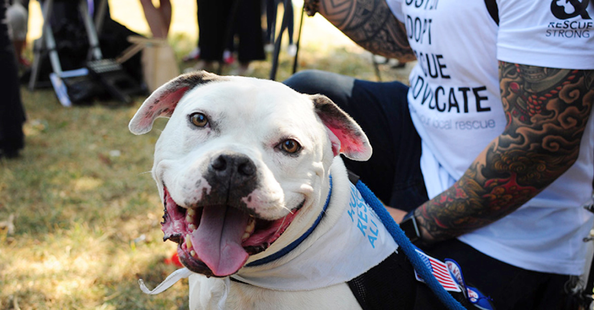
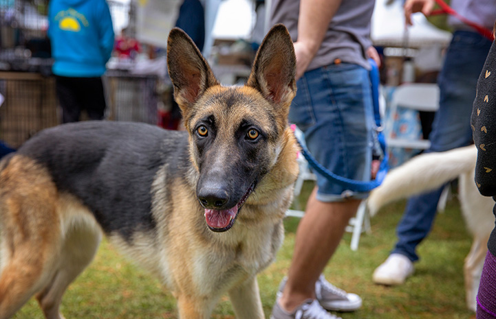

Hurricane Dorian: Hoping for the best, preparing for the worst
SHARON HAWA | SEPTEMBER 9TH 2019
Animal House’s emergency plan for pets before Hurricane Dorian hits the Southeast and Mid-Atlantic regions of the U.S.

Accountability is key: Why socially conscious sheltering falls short
JULIE CASTLE | SEPTEMBER 20TH 2019
Unlike the no-kill philosophy, socially conscious sheltering lacks definable goals, benchmarks of success and accountability.

Hundreds rally to fight pit bull ban in Maryland, but will it be enough?
ELISE TRAUB | OCTOBER 4TH 2019
Animal House fights alongside animal advocates to end breed-discriminatory practices in Prince George's County

Empowering YOU to save more pets’ lives with game-changing technology
JULIE CASTLE | SEPTEMBER 20TH 2019
Animal Houses’ community lifesaving dashboard, an interactive data visualization tool that provides comprehensive “noses in and noses out" information down to the shelter level, launches and you can help.